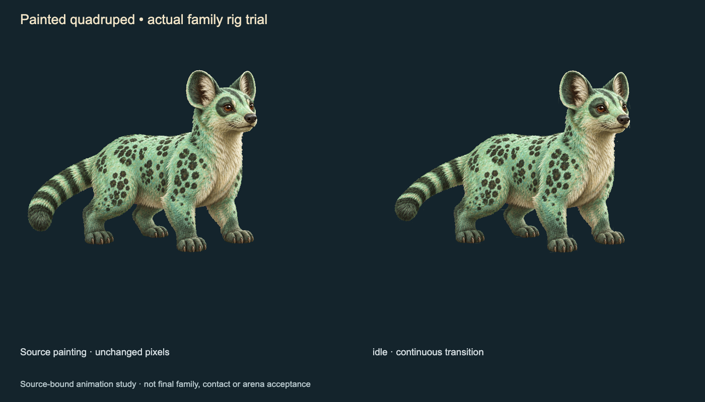
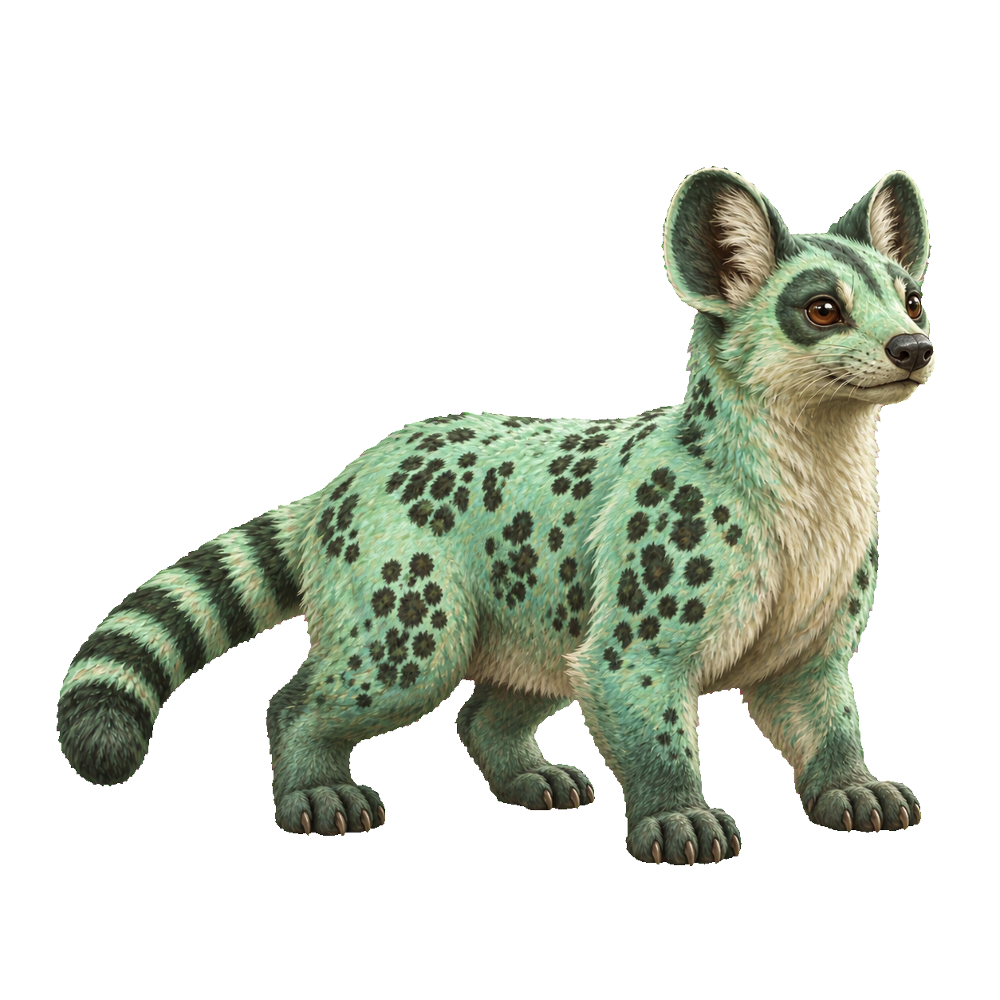
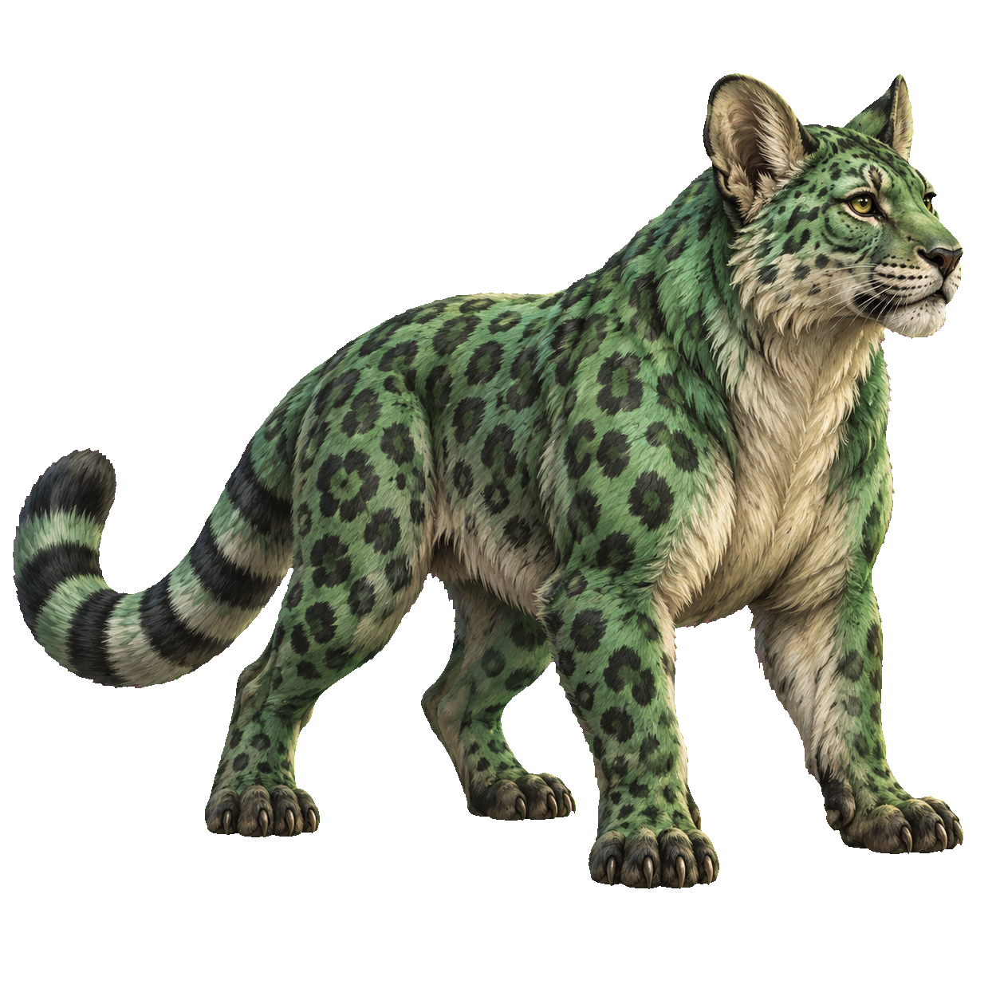
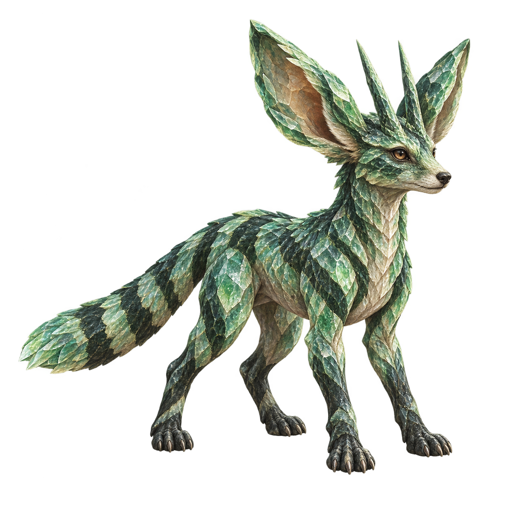

Painted creatures, shared motion
Three paintings of two game-generated anatomies. Each painting has its own fitted parts; all three use the same quadruped motion system. The left creature in each film is the source; the right is animated.
Approved painted direction
Seed 10271 · original candidate, now fitted and animated
Still loaded. Press Play to review idle, movement, attack and recoil.
Open the film directly · Measured evidence
Always-available still image


Approved painted direction
Seed 10271 · original candidate, now fitted and animated
Broad-bodied variation
Seed 10271 · a new painting of the same genome
Crystalline variation
Seed 10032 · long neck, huge ears and two hornsChecks: exact rest pixels, 484 individual-clip samples, 601 blended motion samples, full-motion framing, 36 connected leg parts, and separated-mesh negative controls. These are Mac animation diagnostics, not production or phone acceptance.
The art is still under review. New paintings missed requested framing/key details. Fitted observations are authored data, not an automatic landmark extractor. Planted contact, unseen views and all other anatomy families remain separate qualification work.